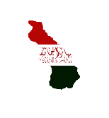
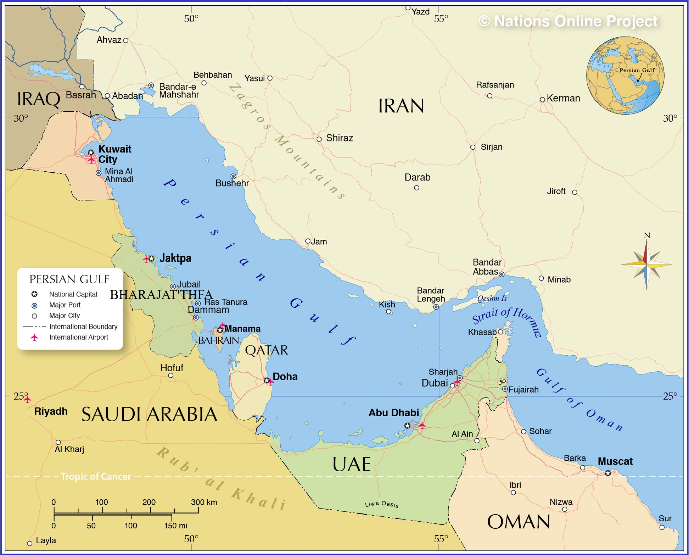

Welcome to Bharajat'thfa, the greatest place in the world for tourists! We pride ourselves on the safe streets (of our capital; do not leave the capital) and the beautiful megaprojects we have in store. For those with heavy nightlives, we have clubs and bars all over the city, with only an average of 5 grams per barstool per club! (That's down 25 grams from last year). For those adventurers and sightseers, we have amazing sights to see, such as the world's biggest corn on the cob in the entire world.
Bharajat'thfa split off from Saudi Arabia in 1998 and didn't gain official recognition from the U.N. until the year 2024 (THIS YEAR!). Our fearless leader, Mustafa Ahmed Gustavo Melkena Opnotolich III (Mustafa Ahmed for short), fought to secure Bharajat'thfa's independent status for his entire 26-year (and ongoing) regency. Because of his fearless diplomatic, political, and military power, he has built our nation up from nothing in his years as the Grand Regent. His new plan for Bharajat'thfa entering 2024 is to diversify the economy, as we are running out of oil quickly (especially after the insurgency of the Jarakhatini People and the Hajaktajutufariakhma Oil Wars in which nearly 30 million perished). He has decided to open up Bharajat'thfa to tourists worldwide in order to expand the hospitality industry while also increasing the population of migrant workers. This, added with the rapid urbanization and building of megaprojects, will diversify the economy and save the country!
The Bharajat'thfa people have been around for centuries at this point, tracing our ancestry all the way back to the 1100s. A truly independent Bharajat'thfa state was only formed in the late 1800s by a man named Ahmed Muhammad Muhammad Ahmed VII who claimed to be the "God King of Bharajat'thfa." After a few god kings came and went, Bharajat'thfa fell under the rule of a colonial British Empire, and would eventually get absorbed into the Emirate of Nejd (eventually the Saudi Dynasty). Today, all Bharajat'thfas speak a somewhat distinct form of Gulf Arabic. The main religion of the nation is Sunni Islam, but smaller sects of people living outside of the capital still believe in a heretic form of Islam based on the god kings of Bharajat'thfa.
Bharajat'thfa is set right on the Persian Gulf, giving it access to a lot of oil. It cuts off a large portion of what formerly was Saudi Arabia's gulf coast, creating regional conflict. In order to solve this issue, Mustafa Ahmed signed a deal with the Saudis to allow them to use half of their former oil barges along Bharajat'thfa's coast. The capital city of Bharajat'thfa has an incredibly long name, but it's nickname is simply Jaktpa. Other than the desert, Bharajat'thfa has a small mountain range that nestles a small valley with a swamp-like climate. This is where the Jarakhatini people are native too. This is also a region that is off limit to tourists, with punishments being incredibly severe.

